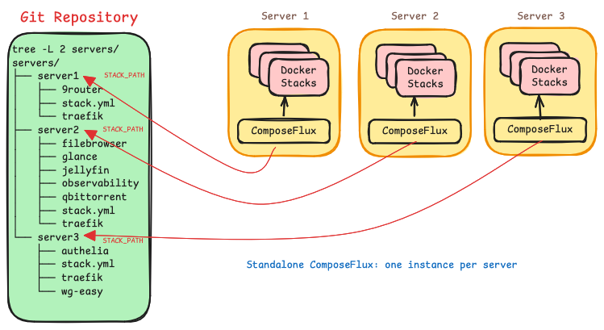
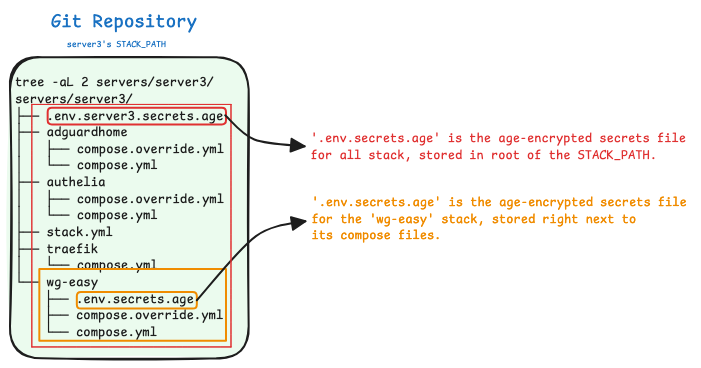
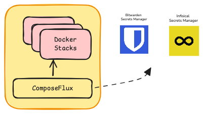

Overview¶
ComposeFlux is a GitOps continuous deployment tool for Docker Compose. It reconciles Docker stacks on a host from a Git repository.
Introduction¶
ComposeFlux reconciles the Docker stacks located under a path (STACK_PATH) in a Git repository, authenticating with a
deploy key. It is standalone: there is no central management service, UI, or database. Managing stacks on a host
therefore means running ComposeFlux on that host and pointing STACK_PATH at the directory that holds those stacks.
Structure¶
Stacks are organized into directories under STACK_PATH, ideally one directory per server.
Stack Path¶
STACK_PATH defines where ComposeFlux looks for stacks. The stacks must be flat: ComposeFlux scans that directory for
drift and reconciles the stacks found in it.
The image below shows multiple standalone ComposeFlux instances running on different servers, all pointing at the same
Git repository with different STACK_PATH values.

Stacks¶
A stack is a Docker Compose directory that contains a Compose file and its related configuration, including an optional Age vault.
stacks/ STACK_PATH
├── stack.yml optional shared configuration
├── shared.env.age optional secrets for every stack
├── traefik/
│ ├── compose.yml
│ └── traefik.env.age optional secrets for this stack
├── nextcloud/
│ └── compose.yml
└── jellyfin/
└── docker-compose.yml
During reconciliation, ComposeFlux lists the directories in STACK_PATH and looks for compose.yaml, compose.yml,
docker-compose.yml, or docker-compose.yaml, plus a matching override file. Directories without a Compose file are
ignored. Discovery is one level deep: nested directories are not scanned on their own. A stack can still be
modularized or include another Compose file, provided the
referenced files are inside the same repository, where changes to them trigger reconciliation. Remote includes (Git or
OCI) are passed to Compose when the project is loaded, so they can affect the deployed project, but ComposeFlux does not
track them: a change to a remote include does not trigger a deployment, and secrets in the remote location are not
loaded. Paths that escape the repository are rejected.
The project name must match the directory name
Do not set a name: in the Compose file that differs from the stack directory name. ComposeFlux treats the
directory name as the Compose project name and rejects a project whose resolved name differs.
Stack configuration¶
An optional stack.yml in STACK_PATH controls deployment order and defines environment variables shared by all
stacks. The file name is configurable with CONFIG_FILE and is resolved relative to STACK_PATH.
startup_order:
- traefik
envs:
DOMAIN: homeserver.local
TZ: America/New_York
ENVIRONMENT: production
startup_orderlists stacks that must deploy first. The remaining stacks deploy afterwards in no guaranteed order.envsare available for Compose interpolation in every stack.- Names in
startup_ordermust match directory names. Unknown names are reported in the log and skipped. - A missing
stack.ymlis allowed. A malformed or unreadable file stops the current reconciliation pass.
Background Operations¶
Health reconciliation¶
Set HEALTH_RECONCILE_INTERVAL to enable periodic health checks; they are disabled by default. When enabled,
ComposeFlux redeploys any managed stack that contains an unhealthy container. Git is not pulled for this recovery.
A container is healthy when either of these is true:
- The container is running and its health status is not
unhealthy. - The container has exited with code
0and carries thecomposeflux.init: "true"label, which marks a one-shot or init container as an expected exit.
Every other state is unhealthy, including restarting, paused, dead, and exited without the init label. A stack
is unhealthy when any of its containers is unhealthy. After three consecutive failed deployments, ComposeFlux stops
trying the stack until the next successful Git sync or image update.
Automatic image updates¶
Set IMAGE_UPDATE_SCHEDULE to a cron expression to check for new images. ComposeFlux compares the local and remote
image digests for each stack. When a newer digest is available, it pulls the images and redeploys the stack. Images
built locally or pinned by digest are skipped, and an image that is missing locally is treated as needing an update.
Add composeflux.image-update.exclude: "true" to any service to exclude the stack. If a scheduled check is still
running, the next invocation is skipped.
Resource pruning¶
PRUNE_INTERVAL defaults to 24h. Set it to 0 to disable pruning.
Pruning applies to the whole Docker host
Pruning is not limited to ComposeFlux stacks. It removes all unused volumes, all dangling images, and all build cache. Containers and networks are not pruned.
Pruning runs only when every stack under STACK_PATH is running in Docker, healthy, and not suspended. Otherwise the
cycle is skipped and a warning is logged.
Secrets¶
ComposeFlux supports two secret sources, which can be used together:
- Offline secrets: age-encrypted dotenv files (
*.age) stored in the Git repository and decrypted in memory. - Remote secrets: Bitwarden Secrets Manager or Infisical. Only one remote provider can be configured.
Offline Secrets¶
Note
Only age with passphrase encryption is supported. Files with the .age
extension are discovered automatically and decrypted with AGE_PASSPHRASE (--age-passphrase).
Offline secrets are dotenv files encrypted with a passphrase and committed to the stack repository. During
reconciliation ComposeFlux discovers the *.age files that apply to a stack, decrypts each one in memory, parses it as
dotenv, and exports the keys as environment variables for Compose interpolation while the stack is brought up.
Plaintext is never written to disk, and the keys are available to the Compose file for interpolation only.
A .age file inside a stack directory provides secrets for that stack. A .age file in the root of STACK_PATH
provides secrets for every stack in that stack path, that is, shared secrets.
Create a dotenv file containing the values to encrypt:
Encrypt it with a passphrase and remove the plaintext file:
The encrypted file is kept next to the stack it belongs to:

The Compose file references the exported keys:
name: wg-easy
services:
wg-easy:
image: ghcr.io/wg-easy/wg-easy:latest
environment:
TOKEN: ${TOKEN} # decrypted from the .age vault and exported while bringing up the stack
See Offline Secrets with Age for the full workflow.
Remote secrets¶
Note
Only Bitwarden Secrets Manager and Infisical are supported as remote providers.
One remote provider can be configured at a time. Values are fetched whenever ComposeFlux reconciles a stack. After
changing a secret in the provider, run composeflux sync to apply it.

ComposeFlux does not inject every secret into every container. A value reaches a container only when the Compose service references it:
Git checkout ownership¶
Warning
Git is the source of truth for the checkout at GIT_CLONE_PATH. Before the startup checkout and before each sync,
ComposeFlux discards local changes to tracked files and logs the affected paths. This includes changes written by
containers through bind mounts. Untracked files are preserved, but a file required by the target revision can be
replaced. Mutable application data must stay outside tracked files.
Labels¶
ComposeFlux adds composeflux.managed, composeflux.version, and composeflux.deployed-at labels to every service
during deployment. The managed label can be used to list stacks:
Besides the labels added by ComposeFlux, services can carry labels that control reconciliation.
Suspend¶
composeflux.health.suspend
When this label is set on any service in the Compose file, ComposeFlux stops managing the stack: no Git deployment, health recovery, or image updates, and the resource prune cycle is skipped.
Example
---
name: actualbudget
services:
actualbudget:
image: docker.io/actualbudget/actual-server:latest
container_name: actualbudget
restart: unless-stopped
labels:
- composeflux.health.suspend=true
hostname: actualbudget
Init¶
composeflux.init
When health reconciliation is enabled, a one-shot container in a stack can be marked so that ComposeFlux does not treat its exit as a failure. Add this label to the service.
Example
---
name: valkey
services:
init-change-ownership: # one-shot container
image: busybox:latest
labels:
- composeflux.init=true # health checks succeed even though this container exits with code 0
volumes:
- valkey_data:/tmp/change-ownership
environment:
PUID: ${PUID}
PGID: ${PGID}
command: chown -R ${PUID}:${PGID} /tmp/change-ownership
valkey:
image: valkey/valkey:8-alpine
container_name: valkey
depends_on:
init-change-ownership:
condition: service_completed_successfully
volumes:
- valkey_data:/data
user: ${PUID}:${PGID}
hostname: valkey
volumes:
valkey_data:
name: valkey_data
Exclude Image Update¶
composeflux.image-update.exclude
This label excludes a stack from automatic image updates.
Example
---
name: actualbudget
services:
actualbudget:
image: docker.io/actualbudget/actual-server:latest
container_name: actualbudget
restart: unless-stopped
labels:
- composeflux.image-update.exclude=true
hostname: actualbudget
Limitations¶
- Stack discovery is one level deep.
- No central controller or multi-server orchestration.
- No rolling updates or zero-downtime deployments.
- No built-in monitoring or alerting.